This page lists past and ongoing projects.
For a complete list of GitHub repositories refer to my GitHub profile.

My PhD studies focused on the acquisition and processing of high resolution Aerial Laser Scanning (ALS) data sets. In particular, processing task such as building extraction and modeling for urban areas were studied.
Current Aerial Laser Scanning (ALS) technology rapidly produces large amounts of accurate point data for urban regions, making it a suitable tool for city-scale geometric modeling of buildings. However, acquisition and processing of urban ALS data remains a challenge because of the geometric complexity of urban scenes. Existing techniques have focused on geometric modeling from elevation data, ignoring details on building walls. This thesis introduces several improvements and simplifications for the acquisition and processing of ALS data: urban flight path planning, scan line analysis, visualization, building extraction, and simple and robust conversion of ALS data into solid models for further processing. By applying geometric reasoning, it is shown that certain flight paths vastly improve the point data quality on building walls. Single scan line analysis then exploits latent information in the data to insert missing echoes caused by undetected pulse reflections, and to identify building wall segments in individual scan lines. Points on building wall segments are then transferred to a digital image and complete building footprints are then extracted using innovative morphological techniques. Finally, a simple and robust method for direct conversion of point data into solid models based on volumetric subdivision rather than surface reconstruction is presented.
thesis [.pdf] | presentation [.pdf]
|
|
|
|
|

My master thesis focused on modeling snow buildup using implicit surfaces (more specifically level sets) by allowing snow to fall in a wind field. Level sets are propagated according to snow particle collisions, with constraints to mimic realistic buildup.
We present a physically-based snow modeling approach that handles geometrically complex scenes and arbitrary amounts of accumulated snow. Scene objects are represented with a novel dual level set structure. This implicit surface representation produces smooth snow surfaces that adhere to granular stability constraints at every timestep. Realistic accumulation patterns are achieved by tracing snow-carrying particles in a dynamic wind-field and on the surfaces of objects. Local level set operations are used to deposit snow at surface locations for which accumulation is physically plausible. The effectiveness of our method is demonstrated by applying our method to a number of challenging scenes.
“Wind-Driven Snow Buildup Using a Level Set Approach”,
T. Hinks, K. Museth,
Eurographics Ireland Workshop Series, Vol. 9, December 2009, Dublin, Ireland, pp. 19-26.
paper [.pdf] | presentation [.pdf] - Best presentation award!

|

|

|

|

|

|
”Visualisation of urban airborne laser scanning data with occlusion images”,
T. Hinks, H. Carr, H. Gharibi, D. Laefer,
ISPRS Journal of Photogrammetry and Remote Sensing, Vol. 104, June 2015, pp. 77-87. DOI
”Point Cloud Data Conversion into Solid Models via Point-Based Voxelization”,
T. Hinks, H. Carr, L. Truong-Hong, D. Laefer,
J. Surv. Eng., Vol. 139, No. 2, May 2013, pp. 72-83. DOI
“Combining an Angle Criterion with Voxelization and the Flying Voxel Method in Reconstructing Building Models from LiDAR Data”,
L. Truong-Hong, D.F. Laefer, T. Hinks, H. Carr,
Computer-Aided Civil and Infrastructure Engineering, Vol. 28, No. 2, February 2013, pp. 112-129. DOI
“Flying Voxel Method with Delaunay Triangulation Criterion For Façade/Feature Detection For Computation”,
L. Truong-Hong, D. Laefer, T. Hinks, H. Carr,
J. of Computing in Civil Eng., ASCE. DOI
“New Advances in Automated Urban Modelling from Airborne Laser Scanning Data”,
D.F. Laefer, T. Hinks, H. Carr, L. Truong-Hong,
Recent Patents on Engineering, Bentham Science Publishers, Vol. 5, No. 3, December 2011, pp. 196-208. DOI
“New possibilities for damage prediction from tunnel subsidence using aerial LiDAR data”,
D.F. Laefer, T. Hinks, H. Carr,
Geotechnical Challenges in Megacities, Vol. 2, June 7-10, 2010, ISSMGE Moscow, pp. 622-629.
“Wind-Driven Snow Buildup Using a Level Set Approach”,
T. Hinks, K. Museth,
Eurographics Ireland Workshop Series, Vol. 9, December 2009, Dublin, Ireland, pp. 19-26.
paper [.pdf] | presentation [.pdf] - Best presentation award!
“Flight Optimization Algorithms for Aerial LiDAR Capture for Urban Infrastructure Model Generation”,
T. Hinks, H. Carr, D.F. Laefer,
Journal of Computing in Civil Engineering, Vol. 23, No. 4, November/December 2009, pp. 330-339.
“Post Facto Registration Tools for Urban Modelling”,
Y. Morvan, T. Hinks, H. Carr, D.F. Laefer, C. O’Sullivan, W.S. Morrish,
EuroGraphics 2008, April 2008, Crete, Greece, pp. 215-218.
“Impediments to vertical data capture from Aerial LiDAR for Three-dimensional Building Extraction”,
T. Hinks, H. Carr, D.F. Laefer,
IABSE Symposium Report, IABSE Symposium, International Association for Bridge and Structural Engineering, September 2007, Weimar, Germany, pp. 268-274. DOI
Robust Building Outline Extraction. PTO 56793223, Provisional filing May 2008, Full filing May 2009.
Gold medal at Young European Arena of Research (YEAR), held in Ljubljana, Slovenia in April 2008.
“Impediments to Vertical Data Capture from Aerial LiDAR for Three-dimensional Building Extraction”,
TRB 87th Annual Meeting, January 2008, Washington, DC, USA.
Wireframe rendering is traditionally performed in two passes: the first pass renders filled triangles, and the second renders line primitives, using the depth buffer from the first pass to eliminate hidden lines. This approach not only requires submitting geometry to the GPU twice, but also suffers from depth-testing issues caused by subtle differences in rasterization between lines and triangles. These discrepancies often lead to rendering artifacts for which there is no robust solution.
In 2006, a new technique was introduced in a SIGGRAPH sketch titled Single-Pass Wireframe Rendering. This method employs a pair of shaders to render both triangles and wireframe edges in a single pass. In addition to resolving rasterization inconsistencies, the technique is more efficient and produces smoother visual results. The core idea is to compute the distance from each fragment to the edges of its corresponding triangle. If a fragment lies within a specified threshold—typically half the desired line width—it is shaded with the line color; otherwise, it is shaded with the triangle color. To mitigate aliasing, a smoothing function is applied at the transition between line and fill regions.
Most of the computation occurs in the vertex shader, where distances to all triangle edges are calculated in viewport space. These values are then interpolated across the primitive and evaluated in the fragment shader. A more robust variant of this approach, based on geometry shaders, has since been proposed by NVIDIA. Their implementation addresses edge cases involving primitives with vertices outside the view frustum and further reduces the amount of data sent to the GPU.

|

|

|

|

|

|
Volumetric effects, such as smoke, are challenging to represent using standard rasterization techniques because light interacts with participating media rather than with surfaces. This real-time renderer was developed for Naiad Studio and employs a volume-rendering approach based on camera-aligned proxy geometry and GPU shaders. The technique is described in detail in GPU Gems (Chapter 39 on volume rendering techniques).
Lighting is evaluated by integrating the illumination equations through multiple rendering passes of the proxy geometry. During this process, accumulated light is stored in a view buffer while visibility from the light source is computed simultaneously. This approach enables efficient real-time rendering of complex volumetric lighting effects.

|

|

|
Isosurfaces are ubiquitous in computer graphics, particularly in applications where geometry undergoes significant topological changes over time. Level sets are a specific class of isosurfaces in which the volumetric data represents a Euclidean distance field. In fluid simulations, level sets are commonly used to track evolving fluid surfaces, with the zero-crossing of the distance field defining the interface.
This real-time renderer was developed for Naiad Studio and employs a volume-rendering approach based on camera-aligned proxy geometry and GPU shaders. The technique is described in detail in GPU Gems (see Chapter 39 on volume rendering techniques). Volume data is stored as a 3D texture on the GPU, and the fragments generated by the proxy geometry serve as sampling locations within this texture.
Compared to methods that extract explicit geometry from volumetric data, such as Marching Cubes, this approach offers several advantages. The distance field is rendered directly, avoiding artifacts introduced by superimposed polygonal structures. Per-pixel shading is inherently supported, and arbitrary isovalues can be rendered trivially without additional preprocessing or setup.
| 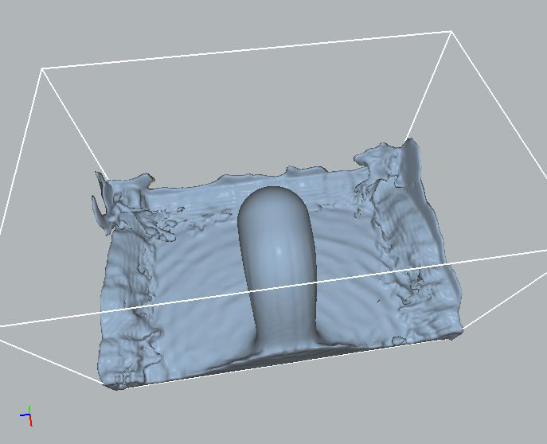 | 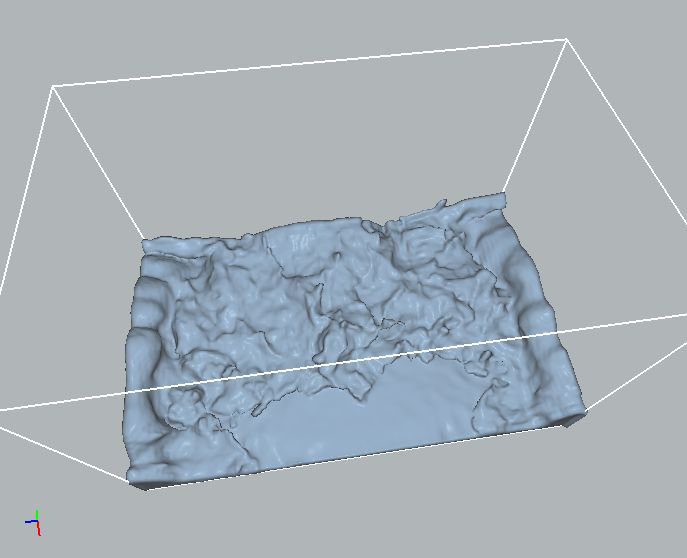 | 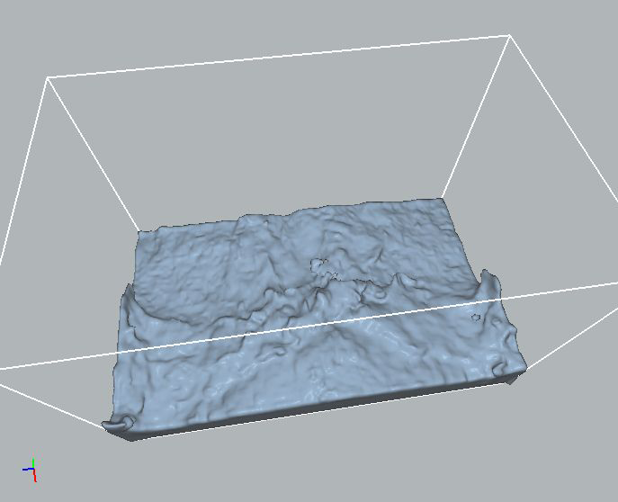 |
Visualizing large point clouds is challenging due to the sheer size of modern data sets. Moreover, using points as rendering primitives introduces significant limitations, which become increasingly pronounced as the number of points grows. In essence, mathematical points have no volume and therefore cannot cast shadows. They also lack surface area and a well-defined normal vector, both of which are fundamental for conventional shading models. Although volume and surface characteristics can be approximated, achieving accurate and visually convincing results is difficult. An alternative approach is to use cubes as rendering primitives. Cubes possess well-defined volumes and six distinct surfaces, allowing them to be rendered using traditional graphics techniques.
Cubes are generated and stored in a hierarchical data structure known as an octree. Using a divide-and-conquer strategy, cubes are constructed to encapsulate the input point set such that each cube contains one or more data points within its volume. These cubes correspond to the bounding boxes of the octree's leaf nodes, which are recursively subdivided to a user-defined depth. Data points are processed in a streaming manner, removing any practical limit on the number of points that can be used to build the octree. As a result, the memory footprint of the octree is several orders of magnitude smaller than that of the raw point data. The generated cubes are exported to an OBJ file, enabling both real-time and offline rendering. For offline rendering, particularly in ray tracing, adjacent cube faces can be merged to significantly reduce geometric complexity, often by approximately an order of magnitude. This optimization substantially accelerates rendering times without compromising visual quality. Images were rendered with Maxwell.
The image below was shortlisted for the UCD Image of Research Competition 2008. The input point set for this image was part of a high-grade aerial laser scan of the city of Dublin.
| 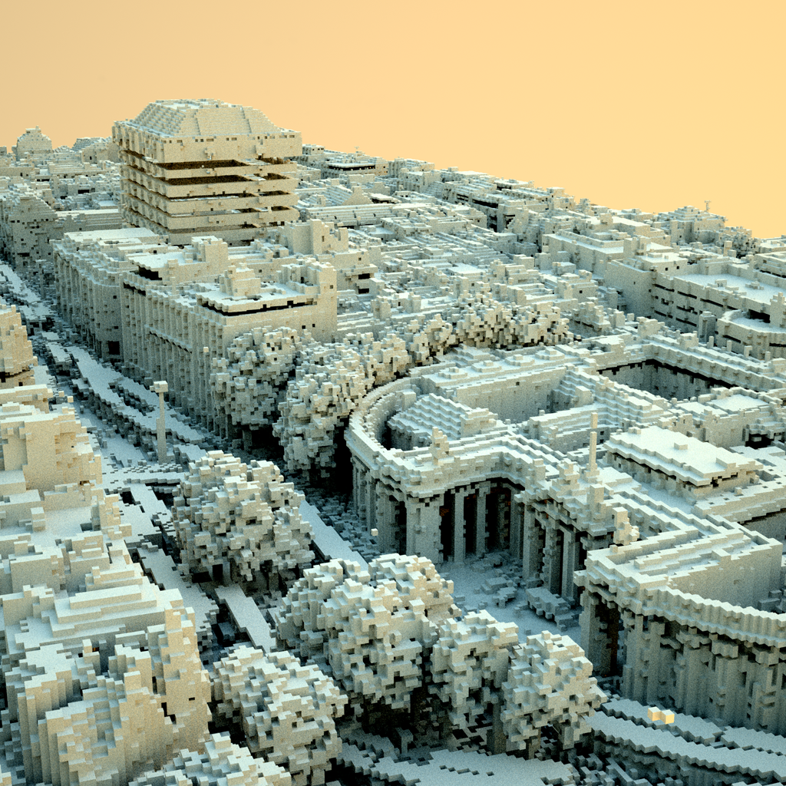 |
Famous rockband Radiohead generously released the data captured during the making of the video for their single House of Cards. The data consists of several thousand frames of real-time laser scan data of singer Thom Yorke's face. A few frames are shown below. Two levels of voxelization, rendered in different colors, are overlaid and rendered with depth-of-field and motion blur. Finally, the images were post-processed to remove some saturation from the green and blue channels.
| 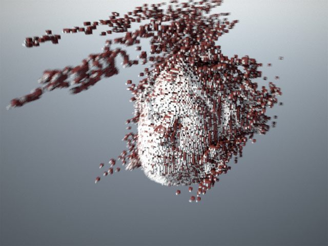 | 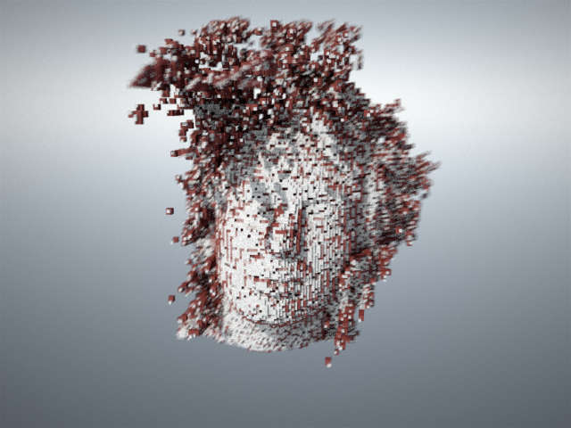 | 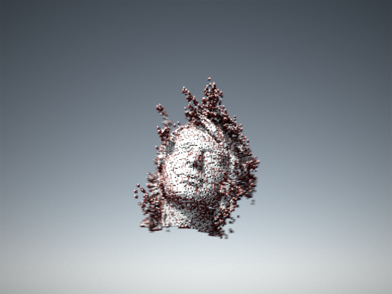 |
The Preetham sky model simulates sky color for a given time and geographic location, specified by latitude and longitude. The core idea is to compute the sky color at the zenith and then use a carefully designed distribution function to approximate radiance across the rest of the hemisphere. This results in a computationally inexpensive, closed-form solution that reasonably matches meteorological measurements and is relatively straightforward to implement.
Despite its advantages, the model is not without shortcomings, and a rigorous critique has been published in recent years. Nevertheless, the Preetham sky model remains well suited for generating visually pleasing sky backgrounds in computer graphics, particularly when compared to simpler alternatives such as constant colors or linear gradients. A primary alternative is capturing panoramic photographs of real skies, but this approach requires costly equipment, is time-consuming, and produces only static lighting snapshots that cannot be animated over time.
This implementation could be further improved by incorporating physically based glare effects and an appropriate tone-mapping operator.
| 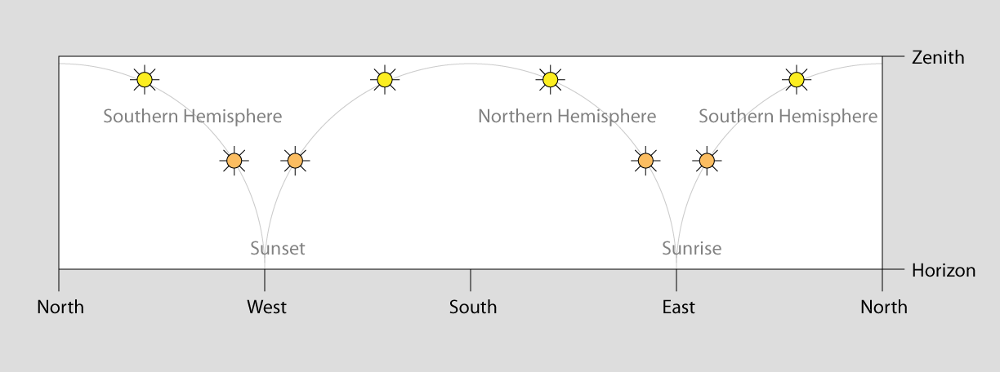 | 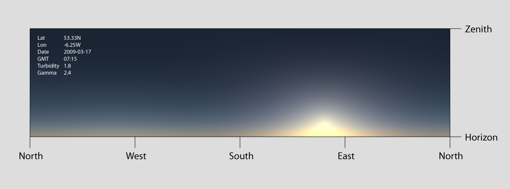 | 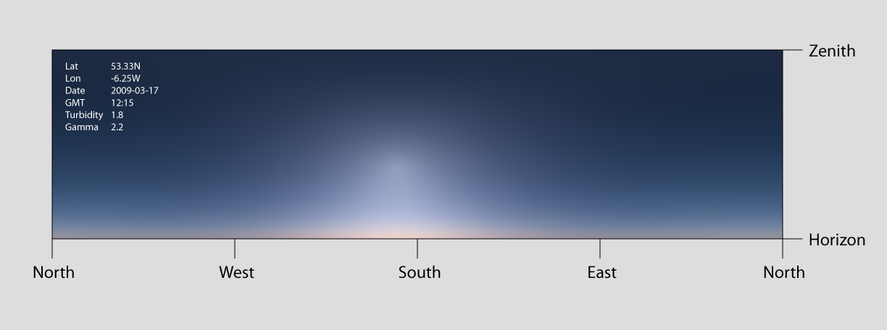 |
| 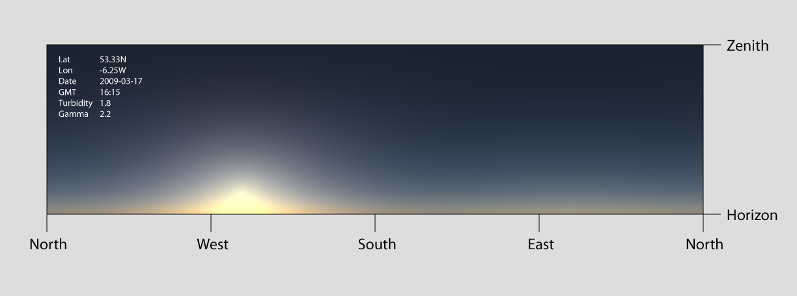 | 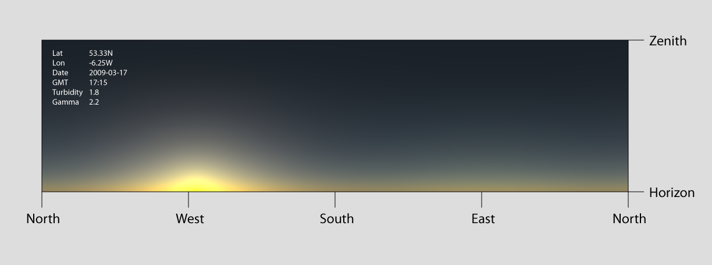 | 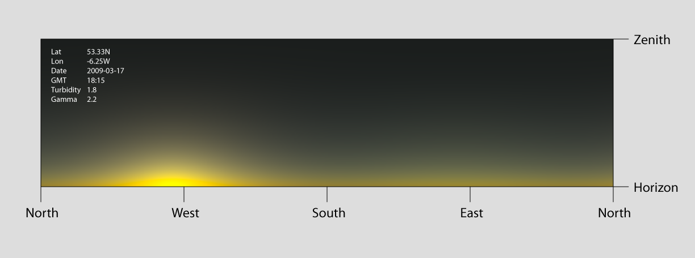 |
This application ray traces level sets using a signed distance function (SDF) to compute safe step sizes that allow rays to efficiently “leap” through the grid. Snow accumulation is simulated by allowing particles to fall downward through a 4D simplex noise field and applying a union operation when particles collide with the level set. While snow buildup progresses slowly for small particles, reducing particle size produces a finer-grained accumulation in which individual union operations become imperceptible over time.
| 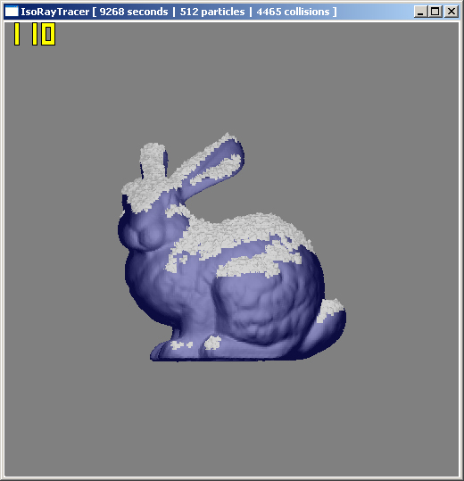 |
User input controls the moon lander’s five thrusters, which are visualized using simple particle systems. An inertial model governs the lander’s rotation and translation. The primary remaining challenge was determining how to correctly distribute thruster forces between rotational and translational motion. For this project, a simple, pragmatic solution was chosen, optimized to “feel” right rather than to be physically exact.
The simulation was ultimately developed into a game in which the player must land at a designated location while managing limited fuel; a task that proves more challenging than it might initially appear.
| 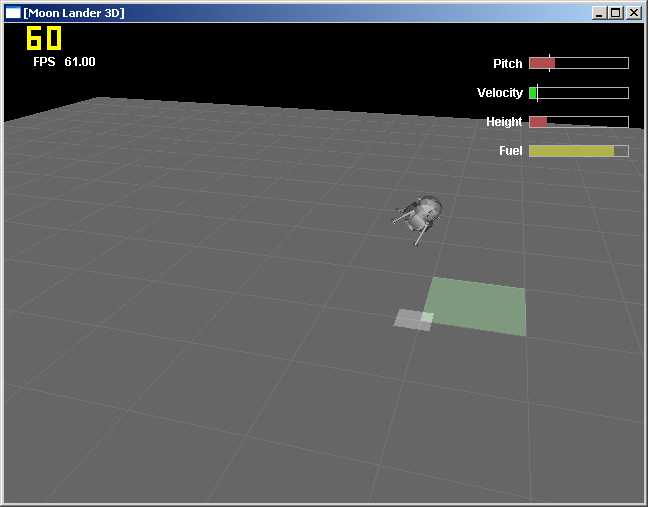 |